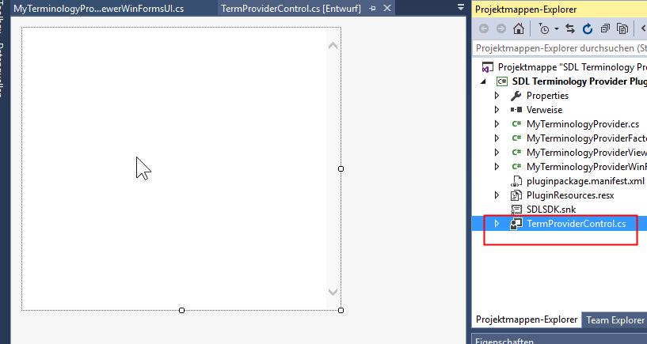

Displaying Entry Content
The full content of an entry can be displayed in the Termbase Viewer window. Learn how to show the content of a line of your glossary file in Trados Studio.
When you right-click a term in the Term Recognition or in the Termbase Search window, you can use the command View term details to show the full entry content in the Termbase Viewer window.
We need to add an Internet Explorer control in which we can display the entry content in HTML format. To do this, add a user control to your project and call it TermProviderControl.cs, for example. Add an Internet Explorer control to it:
Go to the MyTerminologyProviderViewerWinFormsUI.cs class and declare the following term controller object:
//Stores the glossary text file name and path
public readonly string fileName;
Modify the following TermProviderControl property (which is implemented by the ITerminologyProviderViewerWinFormsUI interface) as shown below to create and return the control element:
#region "ProviderSettings"
//Sets the terminology provider settings, i.e. in our implementation the glossary file name
public MyTerminologyProvider(string providerSettings)
{
fileName = providerSettings;
}
#endregion
#region "Definition"
When the you right-click a term and call up the command View term details, the corresponding entry content should be shown in the newly-created control.
You need to modify the JumpToTerm() method as shown below. Trados Studio passes the ID of the selected entry, which you can use to:
- Retrieve the corresponding line from the glossary text file.
- Parse the line and generate the HTML output for the Internet Explorer controller object.
// this function outputs the full entry content in the Internet Explorer control
// of the Termbase Viewer window
public void JumpToTerm(Entry entry)
{
// Load the glossary file
string fileName = _terminologyProvider.fileName.Replace("file:///", "");
StreamReader glossaryFile = new StreamReader(fileName);
string[] chunks;
string entryContent = String.Empty;
glossaryFile.ReadLine();
// Loop through all lines of the file and find the line that has the current entry id
while (!glossaryFile.EndOfStream)
{
string thisLine = glossaryFile.ReadLine();
chunks = thisLine.Split(';');
string thisId = chunks[0];
if (thisId == entry.Id.ToString())
{
entryContent = thisLine;
break;
}
}
// Parse the line alongside the semi-colon
chunks = entryContent.Split(';');
// Generate a small HTML file to display in the Termbase Viewer control
string tmpFile = System.IO.Path.GetTempPath() + "simple_list_entry.htm";
StreamWriter previewFile = new StreamWriter(tmpFile);
previewFile.Write("<html><body><b>Entry id:</b> " + chunks[0] +
"<br/><b>Source term:</b> " + chunks[1] +
"<br/><b>Target term:</b> " + chunks[2] +
"<br/><b>Definition:</b> " + chunks[3] +
"</body></html>");
previewFile.Close();
termControl.SetNavigation(tmpFile);
glossaryFile.Close();
}